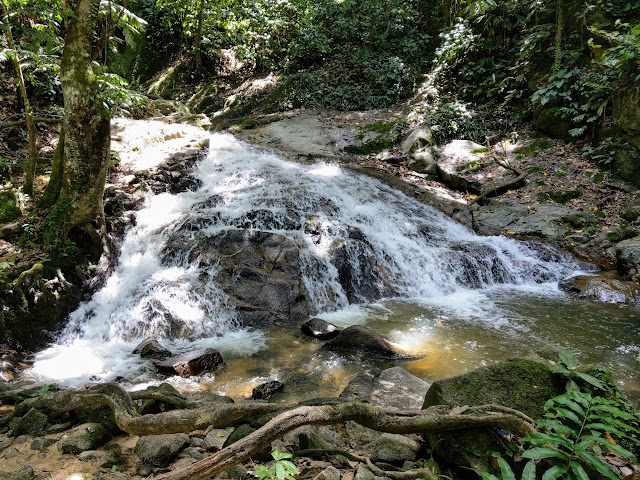
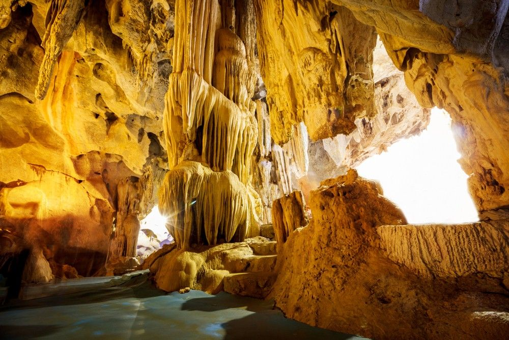

🌿 Nature: Perak State Herb Park
The Perak State Herb Park (Taman Herba Negeri Perak) showcases over 500 species of herbs used in traditional medicine and aromatherapy. Visitors can explore scenic paths, enjoy herbal tea tastings, and take guided educational tours.
🏞️ Historical: Gua Tempurung
Gua Tempurung is a stunning limestone cave system with majestic chambers, stalactites, and underground rivers. Guided tours range from simple dry walks to full-on spelunking adventures. A must-visit for history and nature lovers!